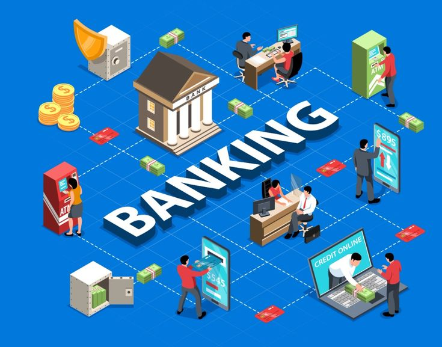

Corporate Bank Account
Guidance on preparing and coordinating applications for business current accounts.
Establishing the right banking relationship is an important step in running a business. We help businesses understand banking requirements, organise documentation and navigate the application process with greater clarity.

Opening a corporate bank account in the UAE involves more than submitting a trade licence. Financial institutions assess the nature of the business, ownership structure, expected transactions, source of funds and supporting documents.
DUCES helps business owners understand these requirements before approaching a suitable banking channel. Our role is to assist with preparation, coordination and communication throughout the process.
Requirements vary by financial institution, business activity, ownership profile and risk assessment.
Discuss Your Banking Requirements →Review your licence, activities, ownership and business model.
Identify potential documentation and banking considerations.
Help prepare a structured application document set.
Assist with communication and application follow-up.
Support designed around your company's structure, operational needs and banking requirements.
Guidance on preparing and coordinating applications for business current accounts.
Preliminary review of your company activity, ownership structure and expected banking requirements.
Assistance in organising company, shareholder and business-related documents.
Understand available account options and the features relevant to your business operations.
Support with application submission coordination, communication and follow-up where applicable.
Guidance on business payment acceptance options, subject to provider eligibility and approval.
Every business has different banking needs. We help assess the requirements relevant to your situation.
Businesses seeking to understand corporate banking requirements after company formation.
Operating companies exploring banking options suited to their current activities.
Companies reviewing their banking and payment requirements as operations expand.
The exact document checklist depends on the financial institution, company structure and business activity. The following are commonly requested items.
This is an indicative checklist, not a guarantee of acceptance. Additional documents may be requested.
A clear business profile can help explain what your company does, who it serves and how money moves through its operations.
What services or products does your company provide?
Who owns and manages the company?
What are the expected payment volumes and counterparties?
Can the origin of business funds be reasonably documented?
A clear process helps you understand each step before moving forward with a banking application.
Understand your company, business activity and banking objectives.
Review available information and identify documentation requirements.
Assist with preparation and coordination of the application process.
Support communication and respond to additional document requests where applicable.
We focus on helping business owners understand the process and prepare more effectively.
We consider your business model and operational requirements before discussing possible options.
We help organise information and documents to support a clearer application process.
We explain the process, limitations and next steps without making unrealistic promises.
Answers to common questions about opening a corporate bank account in the UAE.
Newly established companies may apply, subject to the financial institution's eligibility criteria, due diligence and risk assessment. Approval is not automatic.
Common documents include the trade licence, company constitutional documents where applicable, shareholder identification, business profile and supporting operational information. Requirements vary by institution.
Processing time varies depending on the institution, company profile, document completeness and additional due diligence requirements. No fixed timeline can be guaranteed.
No. DUCES provides consultancy, preparation and coordination support. The final decision rests entirely with the relevant financial institution.
Yes. Existing businesses can discuss their current banking arrangements, operational requirements and possible alternatives, subject to eligibility.
We can discuss payment acceptance options such as POS, SoftPOS and payment gateways, subject to the relevant provider's requirements and approval.
This depends on the financial institution's process. Some may require an in-person meeting, verification or additional checks.
Share your company details and banking objectives. Our team can help you understand the preparation and coordination process.